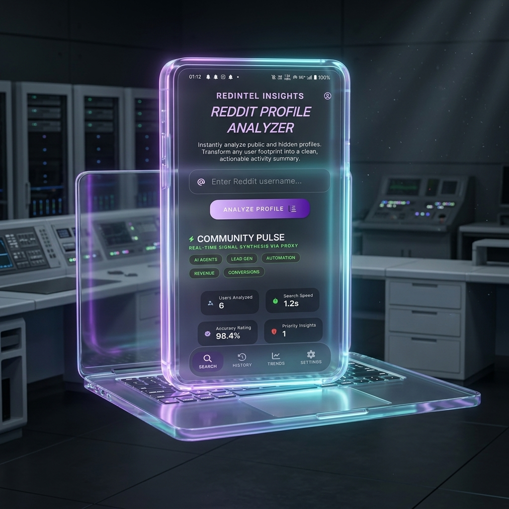

PersonaPulse helps founders, moderators, marketers, and researchers understand who is behind the posts, what communities shape them, and whether a profile is worth tracking, trusting, or avoiding.
Early users get launch updates, beta invites, and a chance to shape the workflows we build first.

Every byte of data, visualized for professional-grade clarity.
Traditional tools tell you *how many* people are talking. We tell you exactly *who* is talking.
Stop scrolling through endless histories. Enter a Reddit username and get a structured view of behavior, communities, and historical activity in one place.
Is this user safe for your brand to associate with? Our AI calculates toxicity, flags adult interactions, and shows community engagement via high-clarity visualizations.
Don't waste time manually copying posts. Click "Export" to instantly generate a clean, shareable PDF dossier summarizing the target's demographic and safety profile for your team.
Start with a Reddit username and let PersonaPulse gather the signals that matter without manual thread-hopping.
See topic patterns, activity intensity, potential risk, and community fit in a dashboard designed for quick interpretation.
Use the profile for outreach, vetting, PR response, research, or export a shareable dossier for your team.
Launching a SaaS or dev tool? Scan highly active users in your target subreddits. Instantly understand what features they beg for, the language they use, and build the exact product your market is already asking for.
Is that viral poster a genuine community member, or a bad-faith bot account? Instantly verify their "brand safety" with automated toxicity scores, NSFW flags, and controversy analysis before engaging with them.
Whether you're a small indie marketer or a digital agency, stop guessing about user behavior. Transform chaotic footprints into clean, structured demographic profiles to run hyper-targeted insights.
Clear positioning and low-friction answers help people commit. These are the questions most likely to come up before someone joins your waitlist.
It is perfect for indie hackers, subreddit moderators, marketers, researchers, and small agencies who need faster profile-level insight from Reddit activity.
Early access opportunities, product updates, and a chance to influence the roadmap as new research and intelligence features are released.
No. The product is useful for outreach, creator vetting, audience research, trust analysis, community monitoring, and rapid-response workflows.
Early users help shape the highest-value workflows first and get priority when private beta access and our Market Intelligence Engine become available.